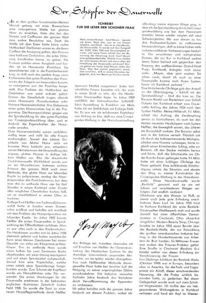

Karl Ludwig Nessler and Josef Mayer are often placed in the same story of the permanent wave. Yet their achievements, professional networks and commercial interests should be investigated independently rather than arranged as a simple succession from one inventor to another.
Different engineering emphases
Nessler’s early system is associated with electrically heated permanent waving using spiral winding and chemical preparation. Mayer’s documented 1920s patent addresses the practical problem of applying electrical heat to flat-wound hair. These were related but not identical engineering problems.
Contact, influence and disagreement
Later narratives discuss connections and tensions between the two men. Such accounts may reflect genuine professional rivalry, differing views of invention and the commercial importance of priority claims. However, personal disagreements should not be presented as established facts without dated correspondence, contemporary interviews or other primary evidence.
The key research questions are whether the two men met, how they described each other’s methods, whether they publicly disputed priority, and what contemporary trade publications reported. A group photograph or retrospective anecdote alone cannot answer these questions.
A contemporary Nessler perspective

Comparative evidence
| Question | Nessler | Mayer |
|---|---|---|
| Early technical focus | Heated permanent waving with spiral arrangements | Flat-wound hair and an associated heating appliance |
| Primary patent evidence | Multiple early permanent-wave patents, to be analysed individually | US 1,619,794, with 1924 priority |
| Commercial context | International salons, equipment and related businesses | Karlsbad salon, REALISTIC apparatuses and instruction |
| Relationship | Personal contact, agreement and conflict require independently dated evidence. | |